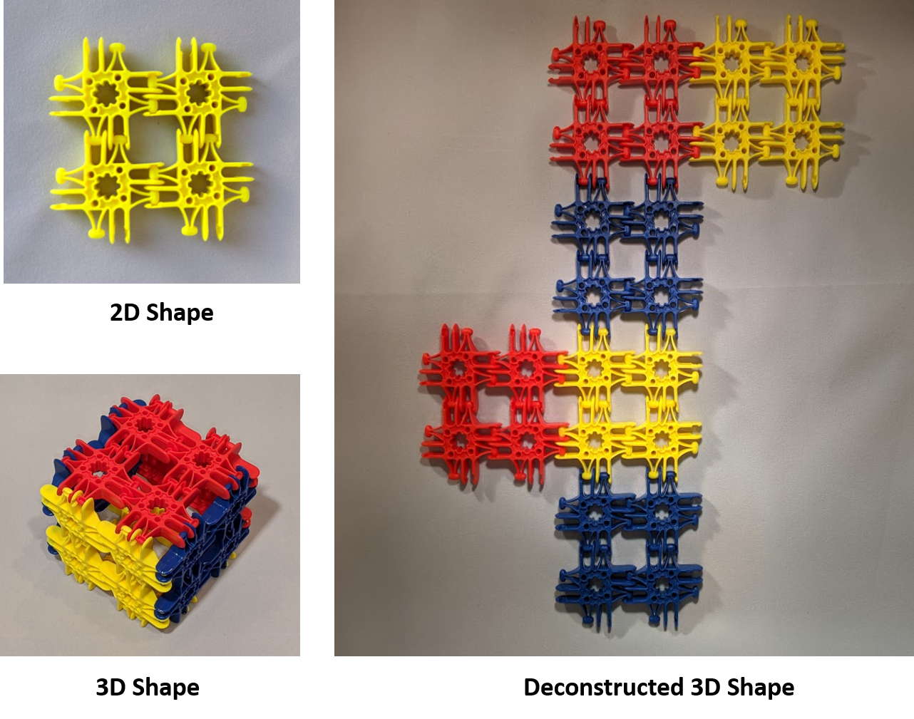
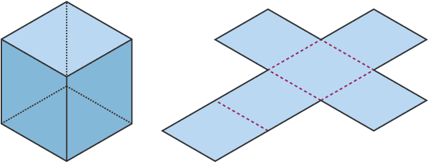

Extend Yourself - Lux Blox: Build and Measure 3D Shapes
 Measure the Surface Area of a 3D Shape
Measure the Surface Area of a 3D Shape
You can use what you know about finding the area of a regular polygon to find the surface area of a 3D shape. If you can find the area of a 2D shape, you can find the surface area of a 3D shape. The surface area of a 3D shape can be found by adding together the area of all the sides that make up the 3D shape.
A deconstructed 3D shape is also called a geometric net. If you fold the deconstructed 3D shape above together you make a cube. A cube is made from six 2D shapes called squares.

Build your own 3D shape and use what you know about finding the area of a 2D shape to find the surface area of a 3D shape. What is the name of your 3D shape? What 2D shapes make up your 3D shape?

Measure the Volume of a 3D Shape
The surface area of a shape includes the outside. If you want to figure out the space inside the shape you need to find the shape’s volume. Volume is found by multiplying length x width x height = volume. You know how to find the length and height of a 2D shape, measure the width of your 2D shape, and use the formula to solve. When we record volume, write it in units cubed or units³.